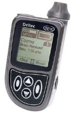

|
|
|
|  | |
Dim. [mm] |
47 x 80 x 24 |
Volume |
5.06 ci |
Weight [oz] |
2.7 |
Reservoir Size |
300u plastic |
Connection |
Luer lock |
Screen Size |
870 sq mm |
Colors |
Tropical green, pacific blue, volcano black |
Basal |
0.05u |
Total |
48/day |
Basal |
4 |
Basal |
30 min |
Basal |
every 3 min |
Temp |
in 0.05 u increments, or -10% to +150% in increments of 5% for 0.5 to 72 hours (30 min increments) |
Bolus |
0.05, 0.1 visual, 0.05, 0.1, 0.5, 1.0 visual or audio |
Carb and Correction Factors |
yes, manual carb, BG from attached CoZmonitor meter or manual entry |
Bolus Type |
units or carbs: standard, extended, combination |
1 u Bolus Duration |
adjustable, 1-5 |
Battery |
AAA x 1 |
Battery Life |
3 weeks |
Motor |
DC |
Memory |
non-volatile: 90 days (4000 events) of basals, carb boluses, correction boluses, alarms |
Software, Download |
CoZmanager: IR port, program pump, personalize basal patterns, alerts, home screens, and download pump history |
Water? |
waterproof IPX8, Surface swimming, 8 feet for 30 minutes |
Extra |
Integrated Freestyle |
Guarantee |
4 years |